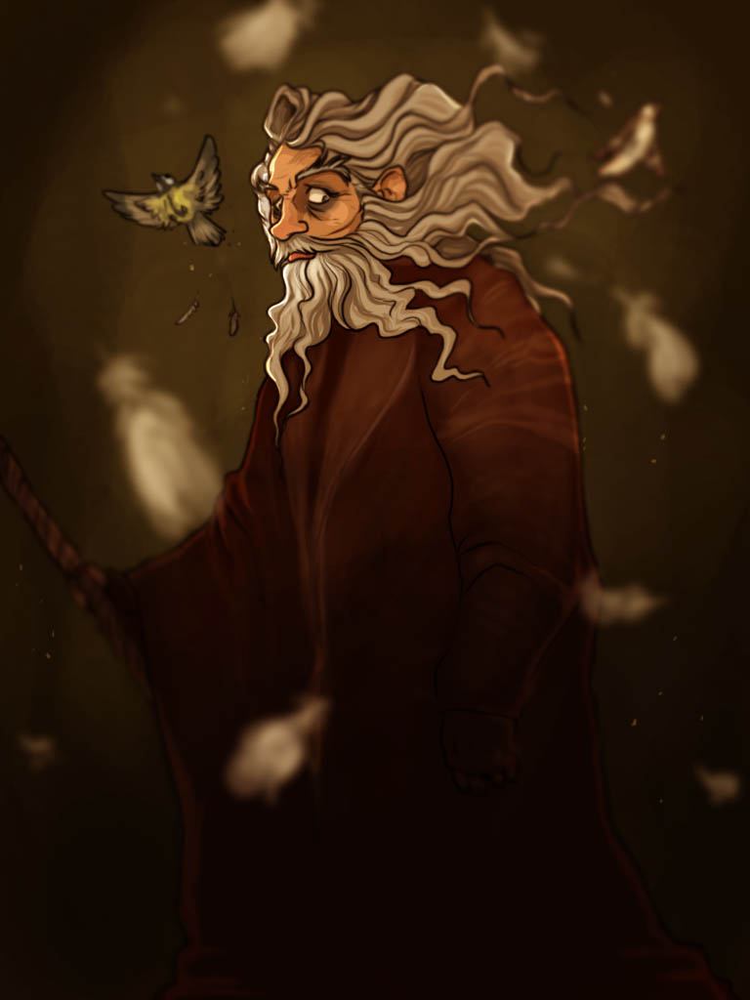

Radagast The Brown
Radagast lived for much of his time in Middle-earth at Rhosgobel in the Vales of Anduin, on the western eaves of Mirkwood, between Carrock and the Old Forest Road, near the Gladden Fields, its name deriving from Sindarin rhosc gobel meaning "brown village".[1] Radagast had a strong affinity for – and relationship with – wild animals, and it seemed his greatest concern was with the olvar and kelvar (flora and fauna) of Middle-earth. He was wiser than any Man in all things concerning herbs and beasts. It is said he spoke the many tongues of birds, and was a "master of shapes and changes of hue". Radagast is also described by Gandalf as "never a traveller, unless driven by great need", "a worthy Wizard", and "honest".